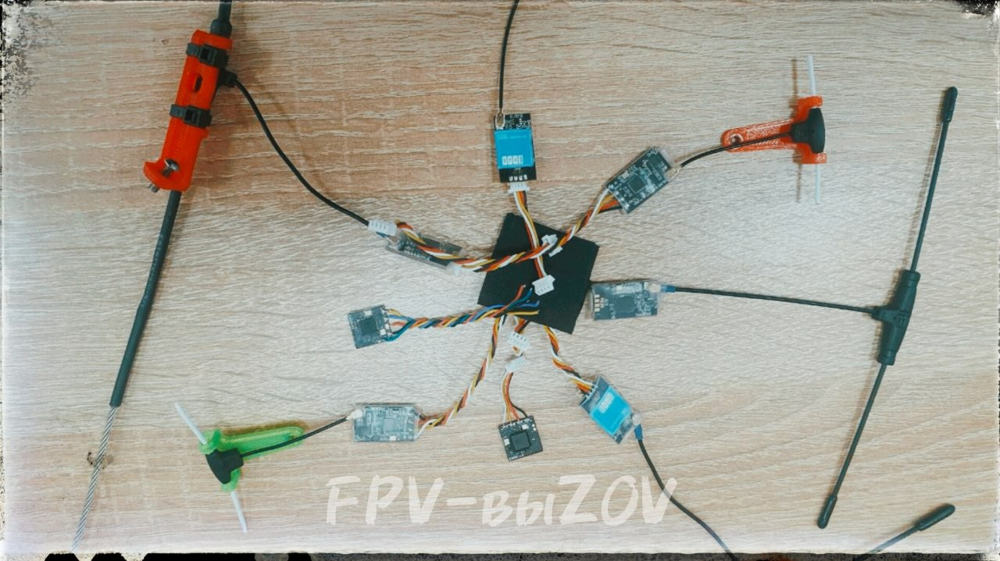

Esptool - программа для работы с flash-памятью.
Используется для чтения и редактирования прошивок ELRS.
Для использования программы esptool необходимо дополнительное оборудование: TTL-адаптер, он нужен для того, чтобы подключить приемник к компьютеру (передатчик подключается просто с помощью USB-кабеля).
📝
Это вложение из поста t.me/platforma_fpv/35/1187

Как скачать прошивку с приемника/передатчика ELRS.
Для чего нужно скачивать прошивку с приемника/передатчика?
- Нужно прошить трофейный приемник/передатчик, а пароль от wi-fi не известен.
- Передать на анализ специалистам нестандартную прошивку. Сейчас попадается много приёмников и передатчиков, которых нет в обычном ExpressLRS конфигураторе.
➡️ Скачать прошивку с приемника/передатчика ERLS можно несколькими способами.
1. С помощью программы
*.
*необходим TTL-адаптер для того, чтобы подключить приемник к компьютеру (передатчик подключается просто с помощью USB-кабеля).
2. С помощью программы
(готовые скрипты для esptool: read и wright).
3. С помощью трофейная программы
*
* аналог esptool, но не требует дополнительного оборудования, нужны только приемник и полетный контроллер.
** у нас не сработала с полетным контроллером на прошивке
Не умею отображать вложенные ссылки на топики
.
⏭️ Все три ПО выложены на нашем диске:
📎
(esptool easy);
📎
(аналог esptool).
⚠️ Общее правило перед тем, как что-то делать – сделайте резервную копию прошивки. Для этого следует подключиться по wi-fi и перейти по адресу
Непроверенная внешняя ссылка
http://10.0.0.1/firmware.bin
http://10.0.0.1/firmware.bin
. Так же стоит сохранить себе настройки, перейдя по адресу
Непроверенная внешняя ссылка
http://10.0.0.1/hardware.json
http://10.0.0.1/hardware.json
, далее “сохранить как”.
📝
Инструкции
#ПРОШИВКА
#FPV
#техник_fpv
#управление
Это вложение из поста t.me/platforma_fpv/2/1189

Как прошить ELRS по проводу.
3 способа.
➡️ Способ 1
UART (Последовательный порт).
Необходимо:
+ TTLадаптер.
- Необходим интернет, прошивается на официальную версию.
сеть Wi-Fi: ExpressLRS RX,
пароль: expresslrs
- Дальше
уже можно прошить на свою прошивку.
Способ 2
Betaflight Passthrough.
Необходио:
+ полетный контроллер.
Можно использовать,
.
- Необходим интернет, прошивается на официальную версию.
сеть Wi-Fi: ExpressLRS RX,
пароль: expresslrs
- Дальше
уже можно прошить на свою прошивку.
➡️ Способ 3
(облегченная версия Esptool)
Необходимо: скачать на Windows программу
+ TTLадаптер.
- Интернет не нужен, сразу можно прошивать на свою прошивку (например на модифицированную
Не умею отображать вложенные ссылки на топики
(для способа 1 и 2)
📎
- программа прошивки ELRS (для способа 3)
#ПРОШИВКА
#FPV
#техник_fpv
#управление
Это вложение из поста t.me/platforma_fpv/2/1238
Write Flash - скрипт для загрузки прошивки ELRS приемников/передатчиков.
* готовый скрипт (для
)
📝 Приложение используется при прошивке,
Это вложение из поста t.me/platforma_fpv/35/1232
Read Firmware - программа для чтения и скачивания прошивки для ELRS приемников/передатчиков.
* готовый скрипт для
Это вложение из поста t.me/platforma_fpv/35/1169
Программа Esptool нужна для работы с flash-памятью в системах с микроконтроллерами Espressif.
ℹ️ С помощью
Esptool
можно выполнять следующие задачи:
- читать, записывать, стирать и проверять двоичные данные, хранящиеся во flash-памяти;
- считывать характеристики чипа и другие связанные данные, такие как MAC-адрес или идентификатор микросхемы flash-памяти;
- читать и записывать однократно программируемые конфигурационные данные;
- готовить для прошивки двоичные исполняемые образы;
- анализировать, собирать и выполнять слияние двоичных образов.
Устанавливается и работает с Windows.
📎
В рамках работы с FPV-дронами данная программа используется для чтения и редактирования прошивок ELRS
Программа Esptool не имеет рабочего интерфейса, работа с ней ведется через командную строку или готовые скрипты
⚠️ Для работы с ELRS-приемниками понадобится дополнительное оборудование в виде TTL-адаптера, так как приемники не обладают своим USB-разъемом.
При работе с ELRS-передатчиками дополнительного оборудования не нужно.
#программное_обеспечение
#для_windows
#техник_fpv
#FPV
#ELRS
Веб-страница создана автоматически на основе поста пользователя ПЛАТФОРМА_FPV